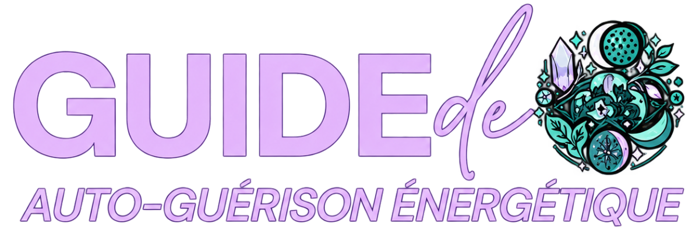
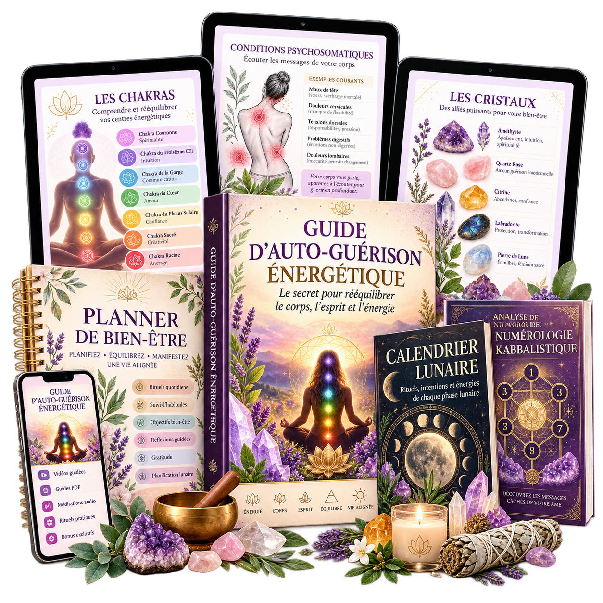
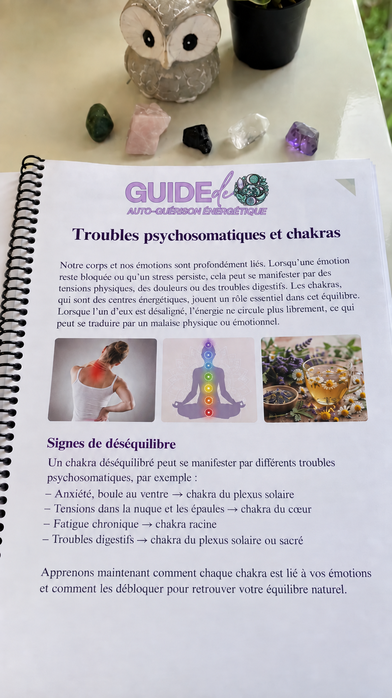
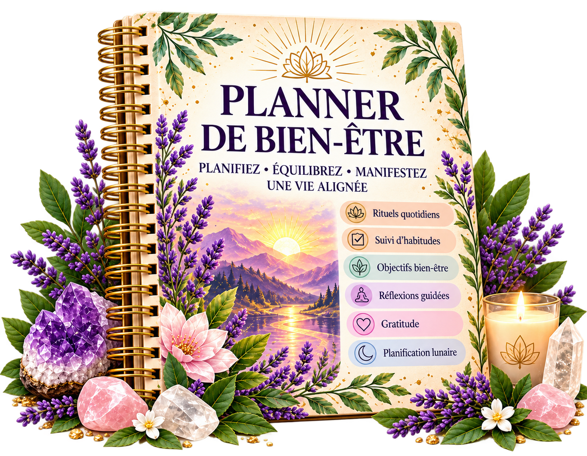
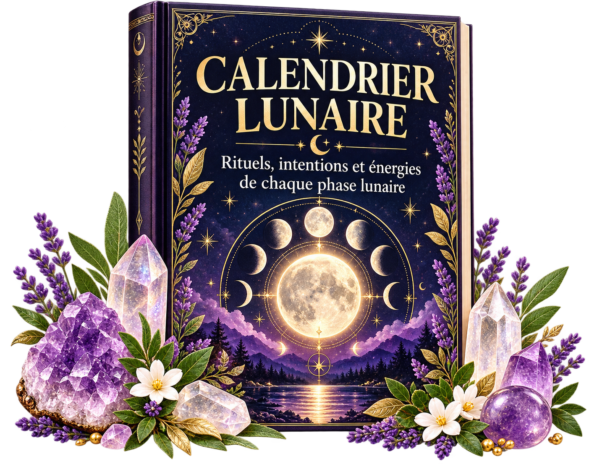
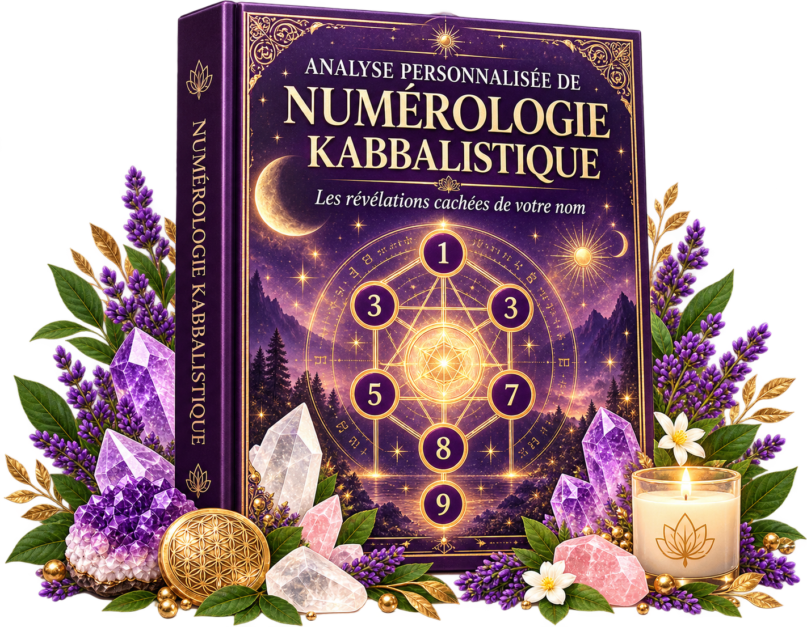
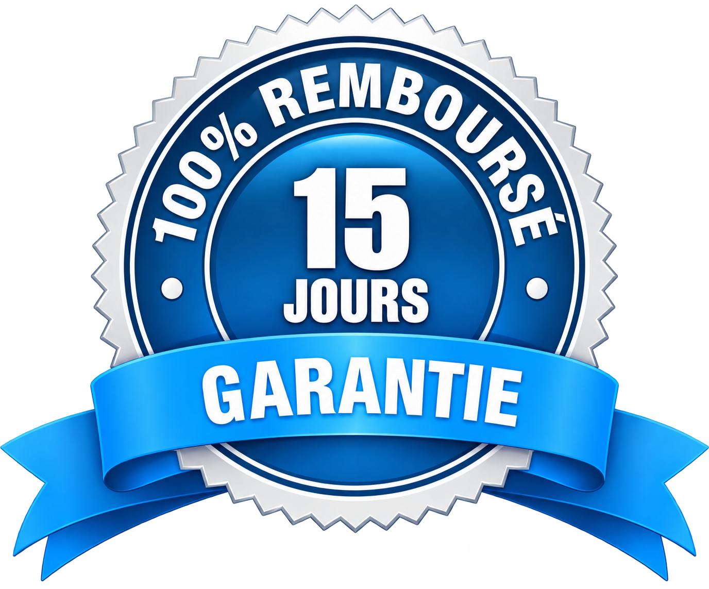

PLUS DE 100 TRAITEMENTS PRATIQUES
Plus de 100 traitements holistiques ont déjà été répertoriés afin que chacun puisse les pratiquer chez soi, en seulement quelques minutes par jour.


JE VEUX UNE GUÉRISON PHYSIQUE ET ÉMOTIONNELLELorsqu’une personne n’arrive pas à gérer correctement ses émotions, le corps peut commencer à somatiser ces conflits non résolus, entraînant l’apparition de symptômes et de troubles physiques.
La psychosomatisation est l’une des façons dont votre corps peut exprimer le besoin de résoudre des conflits émotionnels qui n’ont pas encore été consciemment apaisés.
Le « Guide d’Auto-Guérison Énergétique » propose des techniques holistiques pratiques conçues pour restaurer votre équilibre émotionnel et énergétique, soulager les symptômes psychosomatiques et favoriser une guérison de l’intérieur.
🏆 N°1 DES VENTES DANS LA CATÉGORIE DES THÉRAPIES HOLISTIQUES !
➡️ Un guide qui va au-delà des pratiques holistiques et qui repose à 100 % sur des principes reconnus par la médecine intégrative.
Plus de 100 traitements holistiques ont déjà été répertoriés afin que chacun puisse les pratiquer chez soi, en seulement quelques minutes par jour.
Vous bénéficierez également de notre accompagnement pour répondre à vos questions via WhatsApp, e-mail, Telegram et iMessage.
Lorsque vous aurez besoin d’aide, il vous suffira de nous contacter.
Vous recevrez un matériel simple et facile à suivre.
Il vous suffit de lire et de mettre les pratiques en application.
Vous pouvez y accéder immédiatement et commencer dès aujourd’hui, où que vous soyez, avec ou sans connexion Internet.
Vous recevrez également l’ensemble du matériel dans un format prêt à être imprimé dans n’importe quel centre d’impression, sans coût supplémentaire de notre part.
Vous bénéficierez d’un accès à vie afin de pouvoir consulter le matériel chaque fois que vous en aurez besoin ou le partager avec votre famille et vos proches.
Imaginez pouvoir aider une personne que vous aimez grâce à ce matériel.
En tant que psychologue ou thérapeute, vous disposerez à portée de main d’un guide basé sur la médecine intégrative chaque fois que vous souhaiterez explorer des traitements holistiques difficiles à trouver sur Google ou même dans les programmes universitaires traditionnels.

Comment ce guide peut transformer votre bien-être physique, émotionnel et mental.
Les meilleures pratiques pour profiter pleinement du contenu.
Introduction à l’énergie des cristaux et à leur influence sur le champ énergétique humain.
Comment choisir le bon cristal : propriétés et bienfaits des différents cristaux.
Comment les plantes et les tisanes peuvent compléter l’utilisation des cristaux afin de restaurer l’équilibre du corps.
Introduction à la bonne utilisation des plantes et des tisanes dans la guérison énergétique.
Techniques de purification, d’énergisation et de programmation des cristaux.
Élixirs de cristaux : comment préparer vos premiers élixirs pour une utilisation quotidienne.
Techniques permettant de renforcer les propriétés curatives des plantes.
Traitements répertoriés pour plus de 50 troubles, notamment les maux de tête, l’insomnie, l’anxiété, les problèmes digestifs, les douleurs musculaires et bien plus encore.
Recettes pratiques combinant des cristaux et des tisanes spécifiques pour chaque trouble.
Identifier et traiter les chakras déséquilibrés.
Un guide pour utiliser des cristaux spécifiques afin d’aligner et d’équilibrer chacun des 7 chakras.
Recettes avancées pour préparer des élixirs destinés à la guérison émotionnelle et physique.
Protocoles spécifiques pour des objectifs tels que l’amélioration du sommeil, l’augmentation de l’énergie et l’amélioration de la concentration mentale.
Recommandations destinées aux thérapeutes et praticiens souhaitant appliquer ces connaissances pendant leurs séances.
Séances personnalisées : comment créer des protocoles de guérison adaptés à chaque situation individuelle.
ET BIEN PLUS ENCORE…
🎁 CADEAU N°1

Un planning hebdomadaire conçu pour vous aider à intégrer vos pratiques de guérison dans votre quotidien et suivre votre progression vers l’auto-guérison.
🎁 CADEAU N°2

Un calendrier numérique détaillé présentant toutes les phases lunaires ainsi que les meilleurs jours pour réaliser vos rituels de guérison.
🎁 BONUS EXCEPTIONNEL !

DISPONIBLE UNIQUEMENT POUR LES PERSONNES QUI COMMANDENT AUJOURD’HUI
Une fois votre achat effectué AUJOURD’HUI, vous recevrez un lien permettant de remplir un formulaire avec votre nom complet et votre date de naissance.
Dans un délai de 24 heures, vous recevrez votre analyse kabbalistique personnalisée.
Plus de 100 recettes holistiques pratiques utilisant des cristaux, des tisanes et des plantes afin d’améliorer les symptômes psychosomatiques physiques et émotionnels.
LA VALEUR TOTALE DE L’ENSEMBLE DE CES CONTENUS DÉPASSE 97 €
PAIEMENT UNIQUE
JE VEUX LE TRAITEMENT COMPLET
Vous disposez de 15 jours pour essayer le Guide d’Auto-Guérison Énergétique.
Si, pendant cette période, vous estimez que le guide ne vous convient pas, il vous suffit de nous contacter via WhatsApp, e-mail, Telegram ou iMessage et 100 % du montant de votre achat vous sera remboursé.
Lorsqu’une personne n’arrive pas à gérer correctement ses émotions, le corps peut commencer à somatiser ces conflits non résolus, entraînant l’apparition de symptômes et de troubles physiques.
La psychosomatisation est l’une des façons dont votre corps peut exprimer le besoin de résoudre des conflits émotionnels qui n’ont pas encore été consciemment apaisés.
Le « Guide d’Auto-Guérison Énergétique » propose des techniques holistiques pratiques conçues pour restaurer votre équilibre émotionnel et énergétique, soulager les symptômes psychosomatiques et favoriser une guérison de l’intérieur.
Vous recevrez un matériel simple et facile à suivre. Il vous suffit de lire et de mettre les pratiques en application.
En tant que psychologue ou thérapeute, vous disposerez à portée de main d’un guide basé sur la médecine intégrative chaque fois que vous souhaiterez explorer des traitements holistiques difficiles à trouver sur Google ou même dans les programmes universitaires traditionnels.
➡️ Un guide qui va au-delà des pratiques holistiques et qui repose à 100 % sur des principes reconnus par la médecine intégrative.
Plus de 100 traitements holistiques ont déjà été répertoriés afin que chacun puisse les pratiquer chez soi, en seulement quelques minutes par jour.
Vous disposez de 15 jours pour essayer le Guide d’Auto-Guérison Énergétique.
Si, pendant cette période, vous estimez que le guide ne vous convient pas, il vous suffit de nous contacter via WhatsApp, e-mail, Telegram ou iMessage et 100 % du montant de votre achat vous sera remboursé.